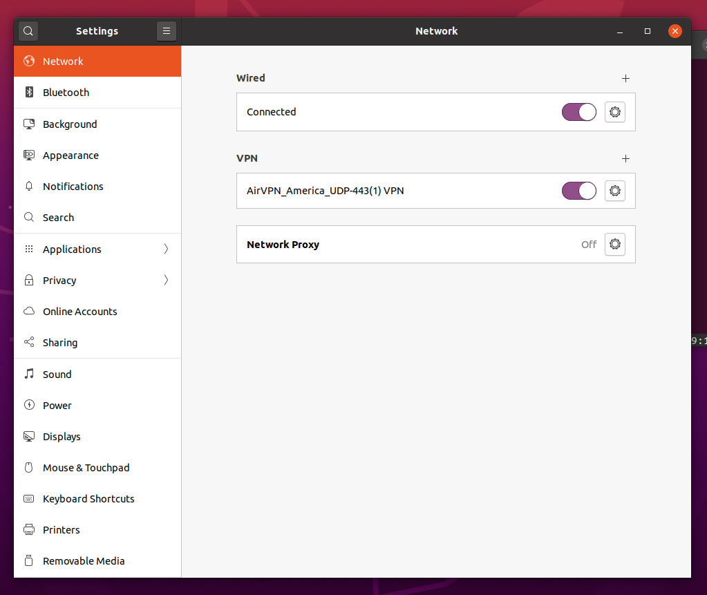
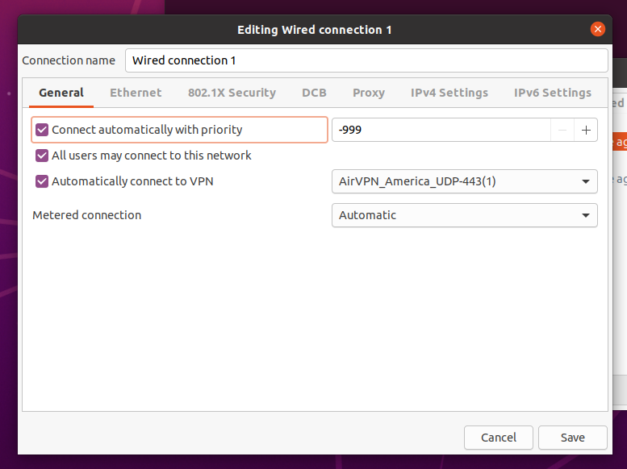
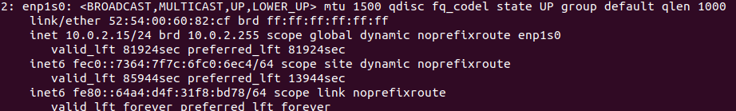

Dave Parrish's Blog
Dave Parrish's Blog
Automatic VPN Only Setup on Ubuntu using AirVPN
Sometimes it is important for a machine to only access the Internet through a VPN such as when seeding torrents, accessing a geo-restricted websites or cashing out a shitcoin. In general, if it is important your IP address is not revealed to a service at any point, then you’ll want to make sure to only access the Internet if the VPN is available.
Purpose
Provided here is instructions on how to get Ubuntu to only access the Internet using AirVPN, but the instructions are probably adaptable to other *Nixes and other VPN providers. The instructions might be adaptable to Tor instead of a VPN, although I haven’t tried and I would be surprised if it would work well because Tor lacks UDP support.
Picking a VPN and AirVPN
I’m focused on AirVPN because they are an established VPN provider which has a balance of good prices, stable connections and promise of no logging. You’ll want to pick a VPN service you trust, but picking a provider other than AirVPN may not be compatible with this guide. There are a number of reviews for VPN service providers such as this one.
Once you have signed up with a service provider you trust, then you’ll want to add the service in the Ubuntu Network settings. See Ubuntu’s official instructions for connecting to a VPN.
Here is what my settings look like. 
Automatic VPN on Startup
Following the answer “How to connect to the VPN automatically on System Startup ?” is as simple as modifying the connection setting in the Ubuntu GUI. The specific GUI can be launched using nm-connection-manager and the “Automatically connect to VPN” needs to be checked, with your VPN service being selected. The VPN service was added in the overall network settings in the last section.
Here is my nm-connection-manager settings. 
Force network traffic through VPN
Usually, forcing traffic through VPN is the most tricky part because of all the edge cases. For example, what happens if the VPN connection goes down? For some use cases, it would be a disaster to just start communicating over the Internet without the VPN!
To ensure traffic is only broadcast through the VPN, I created a script which deletes the “default” network route and creates a route which only goes through the AirVPN service. For more information on how this is possible in Ubuntu, see the resources Routing All Traffic Through a VPN Gateway on Linux and How do I make the script to run automatically when tun0 interface up/down events?.
Below is my script for specifically routing through AirVPN gateways. The file is located in /etc/network/if-up.d so that it will be run every time the a networking interface starts up. If the AirVPN service goes down or connection is broken then then no routes will be available, preventing any communication over the Internet.
#!/bin/sh
# filename: force-airvpn-route
LOGFILE=/var/log/force-airvpn-route.log
if [ "$IFACE" = enp1s0 ]; then
echo "enp1s0 up" >> $LOGFILE
# Remove local network routing to try and force through VPN
echo "Removing default route through 10.0.2.2" >> $LOGFILE
ip route del default via 10.0.2.2
# Grab the ips for airvpn and make sure that IP has a route in order to establish openvpn connection
# https://airvpn.org/faq/servers_ip/
AMERICA_AIRVPN_IPS=$(dig america.all.vpn.airdns.org @dns1.airvpn.org +short)
for IP in $AMERICA_AIRVPN_IPS; do
echo "Adding route for $IP through 10.0.2.2 for VPN connection" >> $LOGFILE
ip route add "$IP" via 10.0.2.2
done
fiIf you notice the Internet is down, then turning networking off and then on or turning on the VPN should get the Internet (through the VPN only) working again. I noticed my time and date would be wrong when resuming a virtual machine I was testing on. Toggling the VPN should help with fixing the date/time also.
Modifications
You’ll probably need to at least modify the ethernet device name and the AirVPN specific references if using a different VPN provider.
Use ip addr show in the terminal to get a list of the ethernet devices on your machine. Mine looks like this in the terminal.

You’ll also need to get a list of IPs your VPN provider uses so that you can allow those in your routes. I did this using the dig utility but I’m not sure if it would work as well with other VPN providers.
Profit!
It should now be safe to rely on the VPN connection always being the route taken when communicating with the Internet. Please notify me if you see any mistakes or bugs. There are a variety of ways to reach me on my contact page. Thank you for taking to time to read this guide! 💯
Modified: July 31, 2020 - 10:28:30 AM